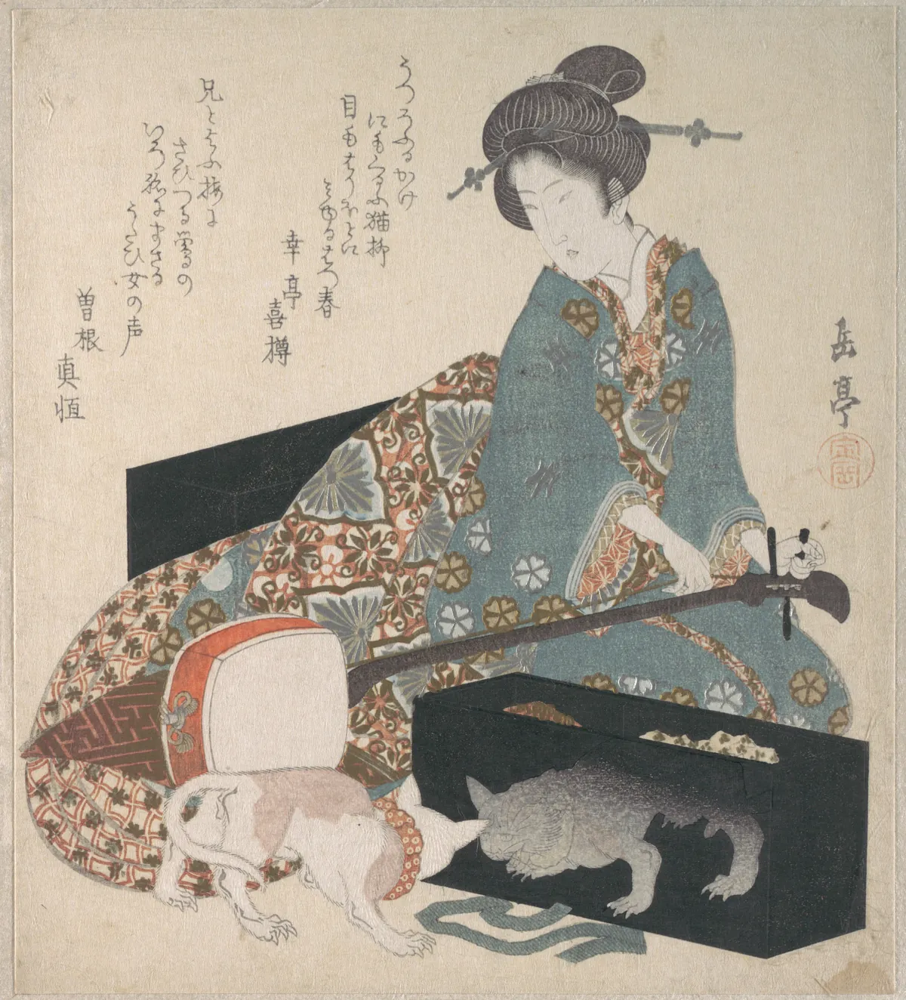
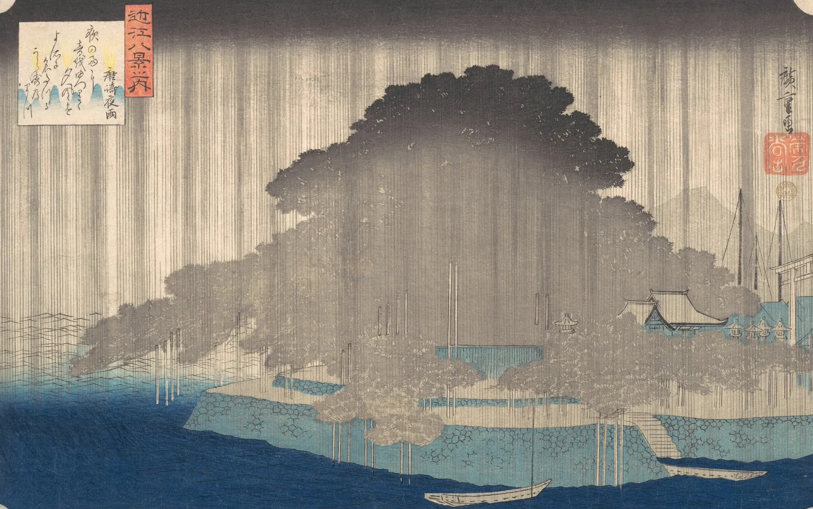
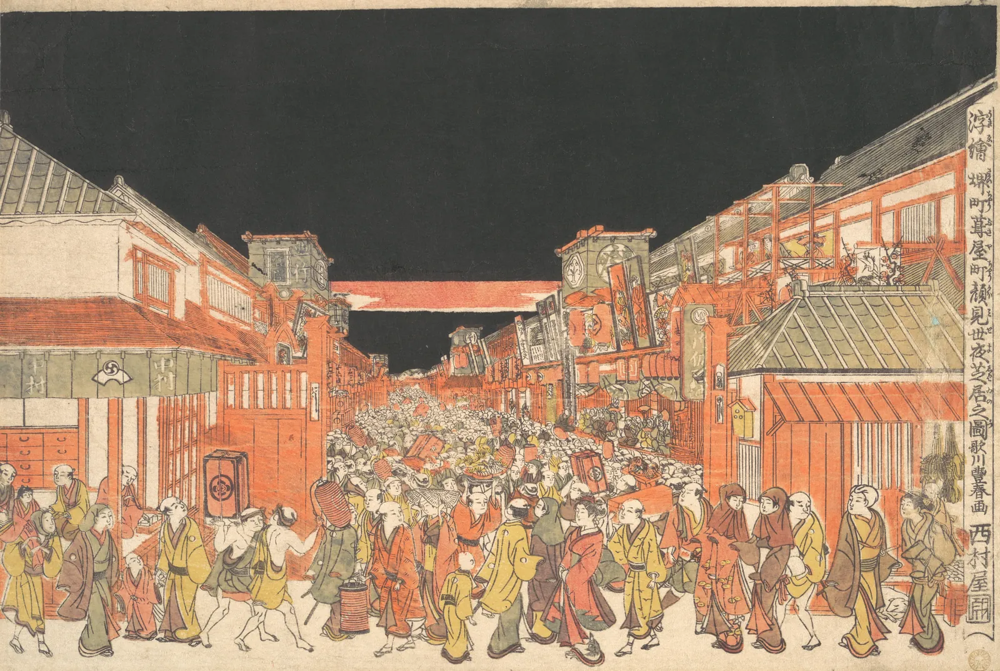
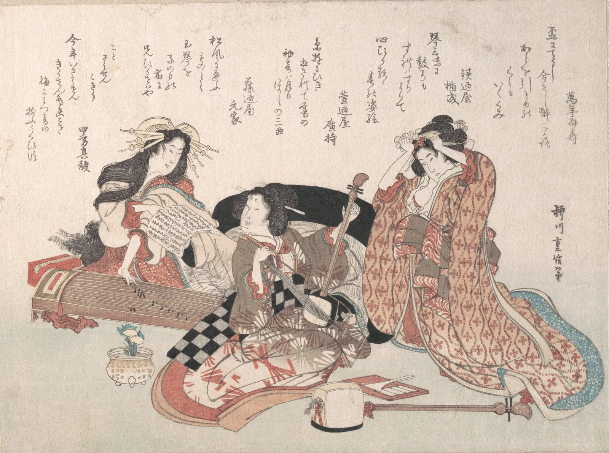
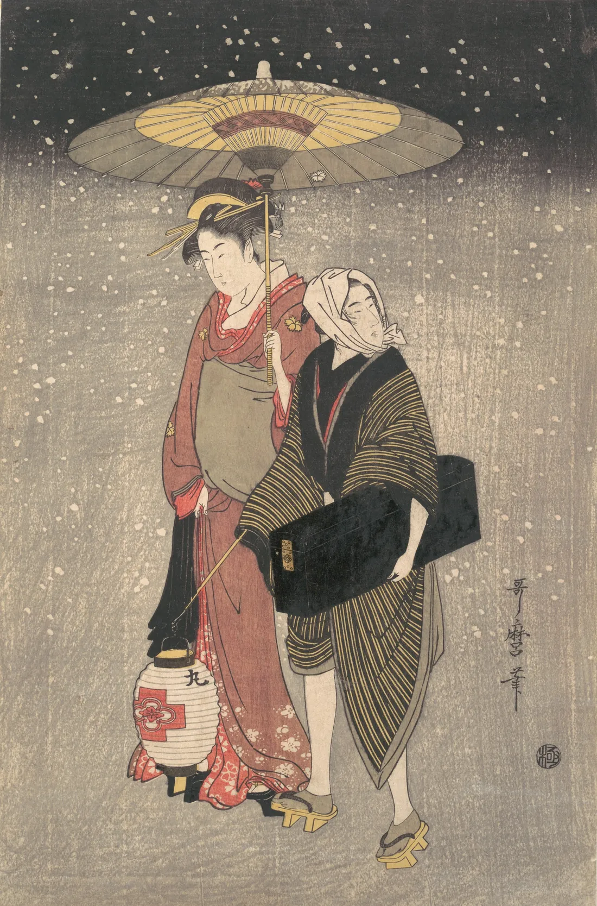
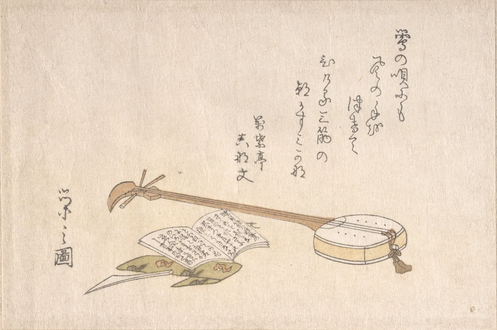
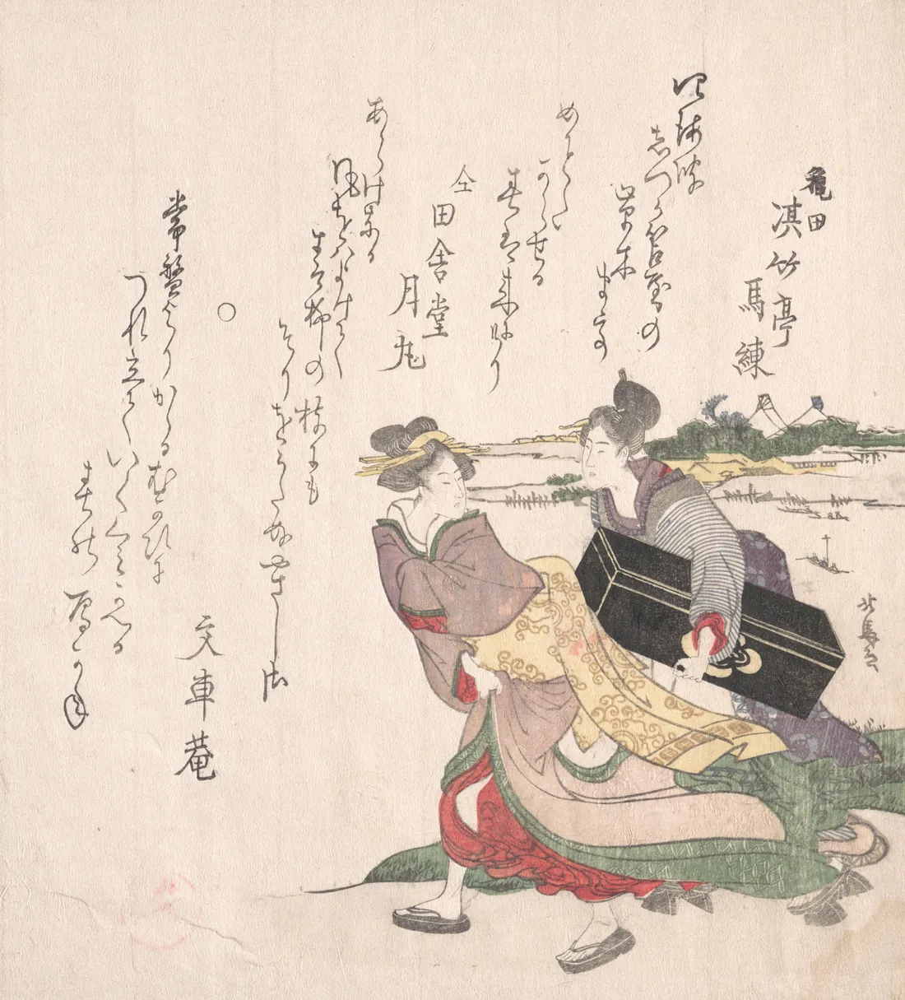

音楽喫茶 B面
Hear the whole album.
Records, hi-fi and a quiet room to hear them properly.
Tonight, 20:00.
Kind of Blue, both sides.

This week in the room
One album a night, both sides, start to finish. Twenty-four seats.
-
Tuesday 3 November
20:00
Waltz for Debby
Bill Evans Trio, 1962
-
Wednesday 4 November
20:00
Moanin’
Art Blakey and the Jazz Messengers, 1958
-
Thursday 5 November
20:00
Kind of Blue
Miles Davis, 1959
Tonight
-
Friday 6 November
20:00
A Love Supreme
John Coltrane, 1965
-
Saturday 7 November
20:00
Somethin’ Else
Cannonball Adderley, 1958
-
Sunday 8 November
17:00
Getz/Gilberto
Stan Getz and João Gilberto, 1964
Sunday starts early, at 17:00.
How the room works

Arrive by quarter to.
The door closes when the needle drops.

Phones face down.
Screens stay dark and photographs wait until the side ends.

Quiet while it plays.
Talk at the bar between sides, never over them.

Requests on the card.
Write one on the card at the bar for next month’s list.

The system
Restored, not new. Everything in the chain is older than most of the records.
- Two turntables
- Belt-driven decks from the early 1970s, one for each side, so nothing waits.
- A valve amplifier
- Built in 1968 and rebuilt by hand in 2024, about eight watts a channel.
- Horn loudspeakers
- Large, efficient and quick, the kind the Tokyo listening cafés favoured.
- A cork-lined room
- Twenty-four seats, all facing the speakers, none facing each other.
New in the racks
Second-hand, cleaned and graded by hand. Prices include a new inner sleeve.
| Album | Artist | Pressing | Grade | Price |
|---|---|---|---|---|
| Blue Train | John Coltrane | 1970s reissue | VG+ | £28 |
| Mingus Ah Um | Charles Mingus | UK pressing | VG | £24 |
| Time Out | The Dave Brubeck Quartet | UK pressing | VG+ | £22 |
| Speak No Evil | Wayne Shorter | 1980s reissue | NM | £32 |
| Saxophone Colossus | Sonny Rollins | 1970s reissue | VG+ | £26 |
| Night Train | Oscar Peterson Trio | UK pressing | VG | £18 |
| Maiden Voyage | Herbie Hancock | 1980s reissue | NM | £30 |
| Ellington at Newport | Duke Ellington | UK pressing | VG+ | £20 |
Grades: NM near mint, VG+ very good plus, VG very good.
Book a seat
Seats are held until ten to eight, then given to the queue.

Visit
Unit 3, Larch Yard
London E8
(made up)
Tuesday to Sunday,
12:00 to 23:00.
Closed Mondays.
- Shop
- The racks are open all day; the room opens for each session.
- Getting there
- Five minutes from the Overground station.